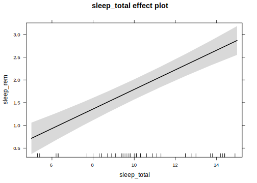
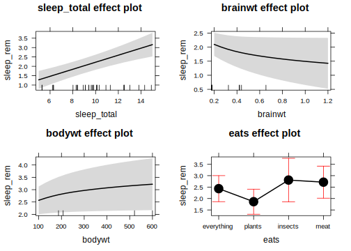

Analyses
Load data
msleep = readRDS("msleep_processed.rds")
Basic model
m1 = lm(sleep_rem ~ sleep_total, data = msleep)
regression_summary(m1)
if (!exists("indent")) {
indent = '##' # ugly hack so _regression_summary can be "spun" (variables included via `r ` have to be available)
}
Summary
| sleep_total |
0.2153 |
0.02459 |
8.756 |
2.916e-12 |
| (Intercept) |
-0.3613 |
0.2783 |
-1.298 |
0.1993 |
Fitting linear model: sleep_rem ~ sleep_total
| 61 |
0.8634 |
0.5651 |
0.5578 |
Marginal effect plot
plot(effects::allEffects(model))

Super-advanced model
m2 = lm(sleep_rem ~ sleep_total + log(brainwt) + log(bodywt) + eats, data = msleep)
regression_summary(m2)
if (!exists("indent")) {
indent = '##' # ugly hack so _regression_summary can be "spun" (variables included via `r ` have to be available)
}
Summary
| sleep_total |
0.1879 |
0.03814 |
4.926 |
0.00001886 |
| log(brainwt) |
-0.3747 |
0.1946 |
-1.926 |
0.06203 |
| log(bodywt) |
0.3648 |
0.1527 |
2.39 |
0.02223 |
| eatsplants |
-0.5707 |
0.3218 |
-1.773 |
0.08464 |
| eatsinsects |
0.3757 |
0.486 |
0.7731 |
0.4445 |
| eatsmeat |
0.2837 |
0.3864 |
0.7344 |
0.4675 |
| (Intercept) |
-1.731 |
0.9195 |
-1.883 |
0.06787 |
Fitting linear model: sleep_rem ~ sleep_total + log(brainwt) + log(bodywt) + eats
| 43 |
0.7932 |
0.6408 |
0.5809 |
Marginal effect plot
plot(effects::allEffects(model))

Summary
bind_rows(
"Model 1" = glance(m1),
"Model 2" = glance(m2),
.id = "Model") %>% arrange(AIC) %>% select(Model, adj.r.squared, BIC, deviance, df.residual)
| Model 2 |
0.5809 |
124.6 |
22.65 |
36 |
| Model 1 |
0.5578 |
165.5 |
43.98 |
59 |
IyBBbmFseXNlcyB7LnRhYnNldCAudGFic2V0LXN0aWNreX0KCmBgYHtyIG1lc3NhZ2U9RkFMU0UsIHdhcm5pbmc9RkFMU0V9CnNvdXJjZSgiMF9oZWxwZXJzLlIiKQpgYGAKCiMjIExvYWQgZGF0YQoKYGBge3J9Cm1zbGVlcCA9IHJlYWRSRFMoIm1zbGVlcF9wcm9jZXNzZWQucmRzIikKYGBgCgojIyBCYXNpYyBtb2RlbCB7LnRhYnNldCAudGFic2V0LXN0aWNreX0KCmBgYHtyfQptMSA9IGxtKHNsZWVwX3JlbSB+IHNsZWVwX3RvdGFsLCBkYXRhID0gbXNsZWVwKQpyZWdyZXNzaW9uX3N1bW1hcnkobTEpCmBgYAoKIyMgU3VwZXItYWR2YW5jZWQgbW9kZWwgey5hY3RpdmUgLnRhYnNldCAudGFic2V0LXN0aWNreX0KCmBgYHtyfQptMiA9IGxtKHNsZWVwX3JlbSB+IHNsZWVwX3RvdGFsICsgbG9nKGJyYWlud3QpICsgbG9nKGJvZHl3dCkgKyBlYXRzLCBkYXRhID0gbXNsZWVwKQpyZWdyZXNzaW9uX3N1bW1hcnkobTIpCmBgYAoKIyMgU3VtbWFyeQoKYGBge3J9CmJpbmRfcm93cygKCSJNb2RlbCAxIiA9IGdsYW5jZShtMSksIAoJIk1vZGVsIDIiID0gZ2xhbmNlKG0yKSwKLmlkID0gIk1vZGVsIikgJT4lIGFycmFuZ2UoQUlDKSAlPiUgc2VsZWN0KE1vZGVsLCBhZGouci5zcXVhcmVkLCBCSUMsIGRldmlhbmNlLCBkZi5yZXNpZHVhbCkKYGBgCgo=